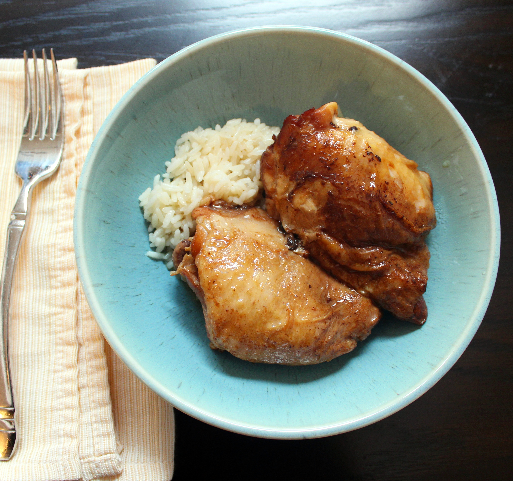

Chicken Adobo

Chicken Adobo is a delicious Filipino dish made in one pot. There are many ways to cook adobo, but today we will focus on making it in a slow cooker.
Ingredients
- 6 pounds skin-on, bone-in chicken thighs
- 2 teaspoons whole black peppercorns
- 12 cloves garlic, smashed and peeled
- 4 bay leaves
- 1/2 cup soy sauce
- 1 cup distilled white vinegar
Steps
- Brown the chicken thighs in a skillet, skin down, for 3-5 minutes.
- Place chicken thighs, peppercorns, garlic, bay leaves, soy sauce, and vinegar into the bottom of a slow cooker, in that order. Make sure the peppercorns and bay leaves are submerged into the liquid.
- Cover and cook on High until chicken thighs are no longer pink in the centers, about 5 hours. An instant-read thermometer inserted near the bone of a thigh should read 165 degrees F (74 degrees C).